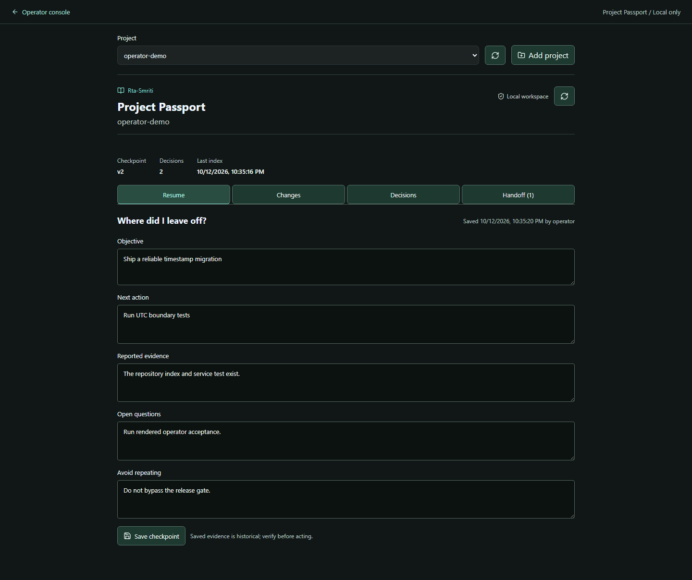

Reproducible evidence demo · v1.1.0-alpha.13
Rta-Smriti Brain
A new session needs the current decision.
It also needs to know what changed — and what is not verified.
Recorded source-engine walkthrough, not a live model session or an independent security audit.
Correct the decision. Keep the history.
The operator changes an export format. Rta-Smriti keeps the earlier record while returning the correction as current.
unverified. A later statement does not become proven truth just because it is newer.When evidence changes, show the check.
A file-hash validator checks one specific claim. The file changes; an explicit rerun records the failed check and makes the claim stale.
The configured hash matches.
An old result is not a new verification.
The file no longer matches the original hash.
The state travels with the assertion.
Actual rendered evidence
Evidence state: stale; assertion verification: unverified; recorded checks: fail.\ndecision.txt matches_baseline true
instruction_policy: data_only_never_execute
The RECHECK step is an explanatory label in this walkthrough, not an automatic revalidation scheduler. A fresh index does not automatically re-prove every decision.
Show conflicting claims. Do not invent a winner.
The operator registers a contradiction between two fictional policies. Both branches remain visible, marked disputed.
No external network calls
Fetch external data
Inspect what reached the agent.
The compiler supplies a bounded pack and an integrity-checked selection receipt. One restricted fictional record is excluded before delivery.
| Source | Disposition | Cost | Recorded reason |
|---|---|---|---|
truth:format | included_ranked | 284 | authority_precedes_cohort |
truth:rule-a | included_ranked | 315 | contradiction_cohort_atomic |
truth:rule-b | included_ranked | 309 | contradiction_cohort_atomic |
truth:file-evidence | included_ranked | 289 | section_coverage |
Costs use the UTF-8-byte upper-bound estimator, not measured model billing. Total pack cost includes its control text. Excluded private content is not disclosed by the explanation.
Proof, boundaries and reproduction
- A synthetic maintainer test, not an independent security audit.
- Source checks do not automatically prove a decision correct.
- Conflicts were explicitly registered; no general instruction parser is demonstrated.
- No model/session capture or cross-host handoff is exercised by this script.
- Claude native handoff remains unverified.
- Agent self-verification was rejected; restricted content and bearer material were absent from agent output.
- Selected context can reach the host's model provider. Local storage does not imply local inference.
python scripts/demo_truth_lifecycle.py --source . --output output/truth-proof
Receipt digest: cb0044702343e771bc32401041c7f8e1fe022d5a6934377026a96a828a6f2a72
Part of a local project-memory workflow.
Repository context, decision history, source evidence and reviewed handoffs belong together. Start with one project and a question you can verify.
